2007 Penguin Internationals
The 2007 Penguin Internationals sailed at the Tred Avon Yacht Club August 24th through 26th quickly turned into a battle royal and a minor arms race when someone provided most of the kids (little and some big ones) in the fleet with a bag of squirt guns. Naturally a super soaker materialized out of nowhere and this led, after the final drifter on Sunday, to the hoses ashore and some very wet sailors. Not that this was the only entertainment.
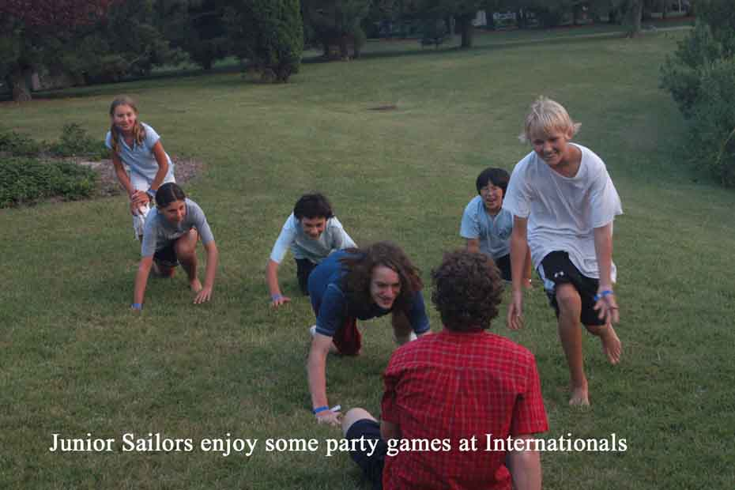
Bobby Lippincott gave us all the quote of the series when his Mom, Pucky, failed to reattach an errant boom quickly enough during a downwind leg on the first day; “That isn’t funny Pucky, that really isn’t funny.” Bobby was the only one in the fleet who wasn’t laughing in the glassy conditions.
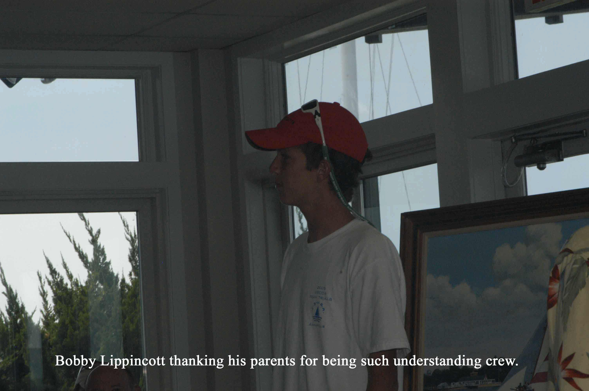
Charlie Krafft was leading and sailing a fine, consistent regatta when he interrupted it by capsizing in the fifth race. Charlie, sailing with his son Douglas threw out the sinking and still edged out 2005 Champion Steve Lavender and enthusiastic daughter Erin for second place.
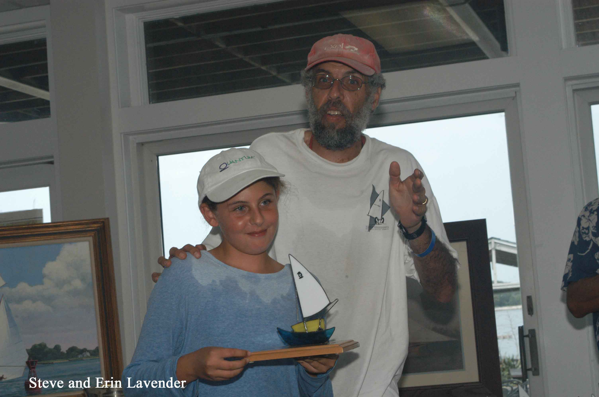
The winner of this fifteen boat, light air series was four time International Champion Bud Dailey sailing with Christian Ostberg. They prevailed by poking their nose out quickly off the starting line, keeping the boat moving and staying in the breeze. Discarding a fifth they counted two firsts, two seconds and two thirds.
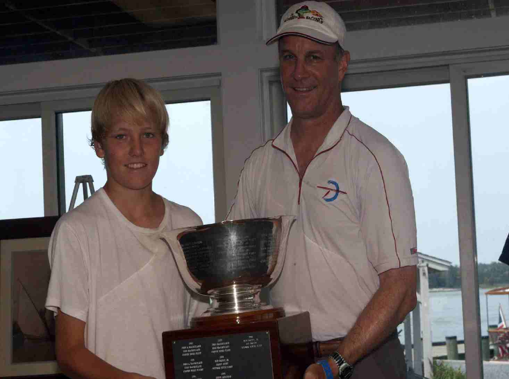
Jonathan and Emily Bartlett were fourth
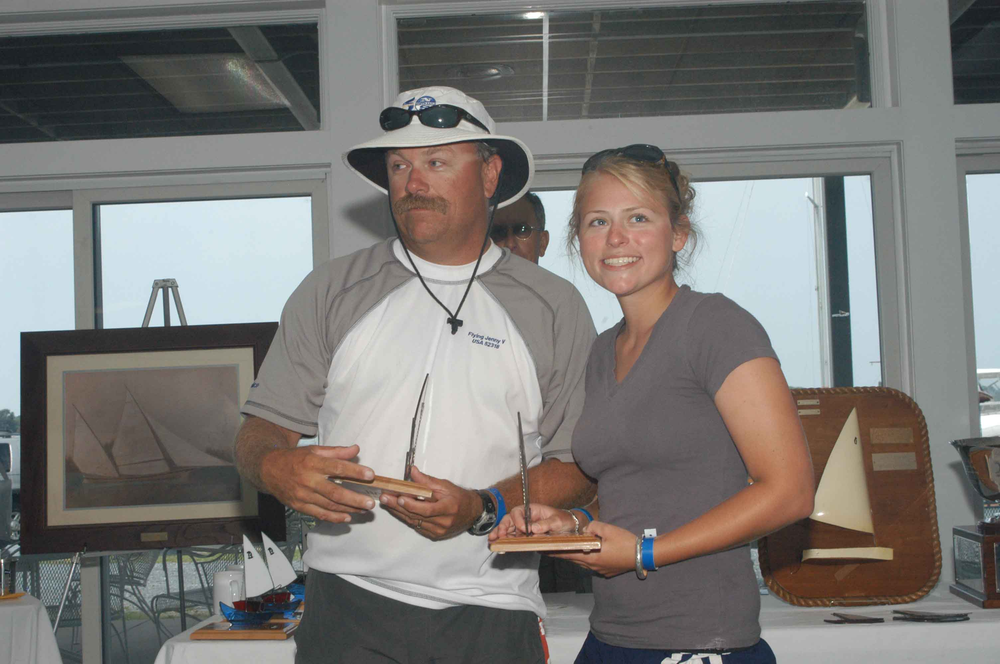
and
Spencer McAllister, sailing in his first Internationals, with crew Kara
Spector was fifth.
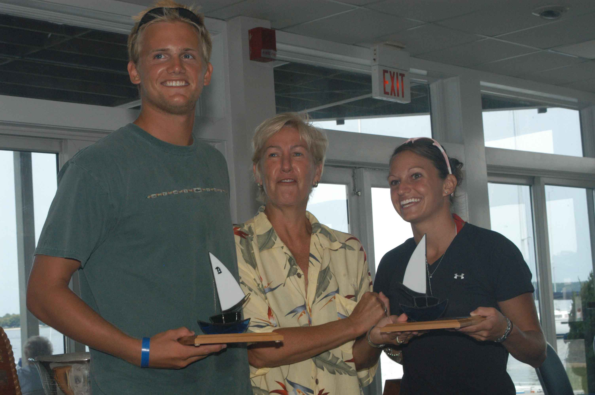
Many of the boats sailed with multiple, rotating crew. After her Friday debut, Pucky turned over her coveted crew position to Dad Richard for Saturday and Sunday. This proved to be an outstanding combination when they posted a second and third in the only breeze of the series; the last two races on Saturday.
Scott Williamson, who teaches summer sailing at Gibson Island alternated two of his best students John and Jim Fowler who raced in their first and last Penguin Regatta before heading back to grade school in Kentucky.
Martin Krafft alternated friends Peter Bartlett, Matthew Chow and Mom Cairn over the three days. Matthew Chow also sailed with Amy Krafft on Friday and Saturday. Amy wisely sat out the Sunday drifter.
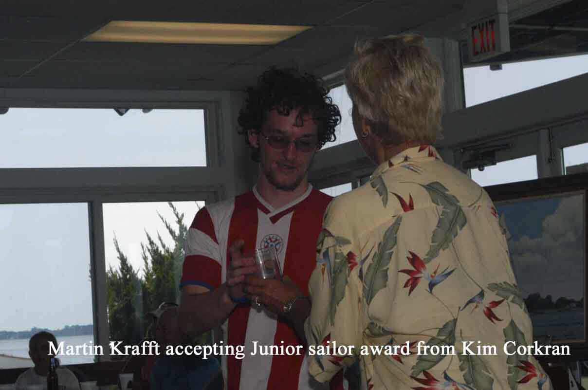
Sailors with steady crew included Bill Lane and Hannah Schmidt. They sailed a fine, consistent series with a nice second place in the third race.
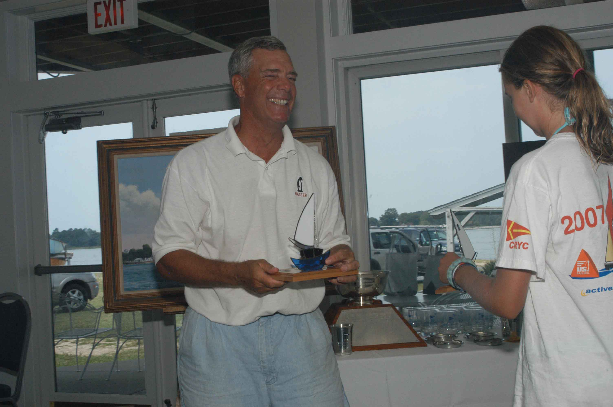
Henry Noyes who sailed with son Avery will miss a
few regattas as he is leaving for Afghanistan in the near future. We wish him a
safe trip. 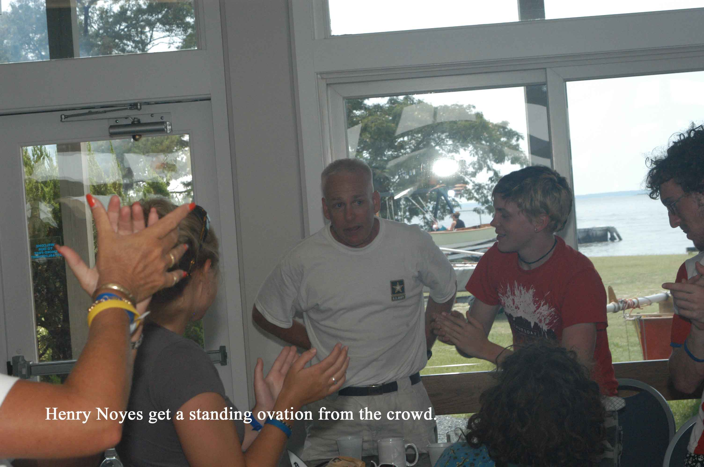
Patrick Firth was always on the attack with his squirt gun from Ed Lutz’s Upbeat. We hope to see more of this fine crew in future regattas.
Roger Pickall singlehanded to a fine finish in the first race but missed crew Patrick Penwell during the other races.
Monty Baker sailed with steady crew Donna MacKenzie and, more importantly, has been working on two new Penguin venues for future regattas. Stay tuned.
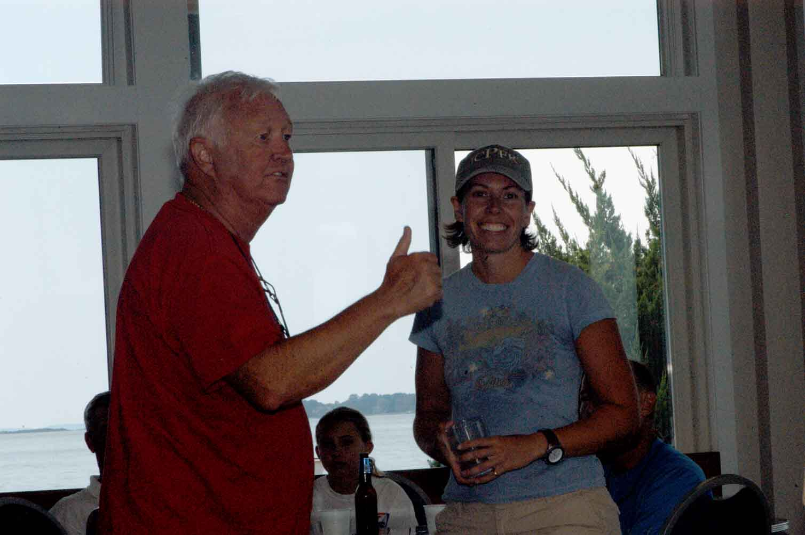
My crew, Del Walter, was a great inspiration to everyone in the squirt gun wars which turned into hose wars ashore. He should have gotten an award for the most soaked. Obviously, a great target.
Many thanks to “Bubbles” Shattuck for a fine job by the entire RC Team. They ran a fine regatta in very tough conditions. Kim Corkran did most of the organizational work, planned the party and arranged the trophy presentation and handled all the many details necessary for a good time. Finally, David Cox got things going and recruited Kim and Bubbles and finally twisted a bunch of arms to provide the ice cream truck which was a great hit at the party. Without these fine behind the scenes people none of this fun would have been possible. Thank you all for a job well done.
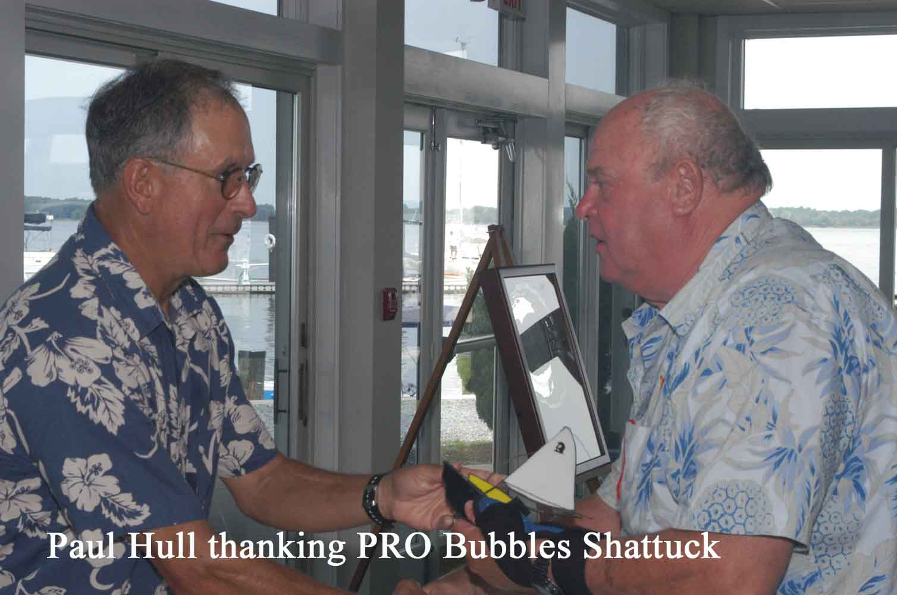
The entire Penguin class extends condolences to the Fitzgerald family friends and relatives. The funeral for the victims of this tragedy took place on Friday.
Paul